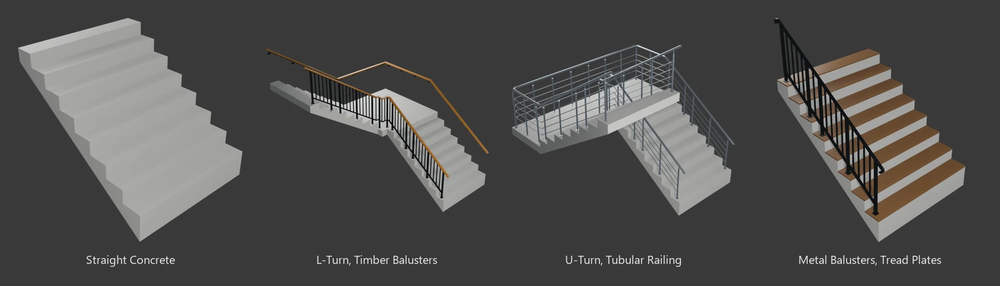
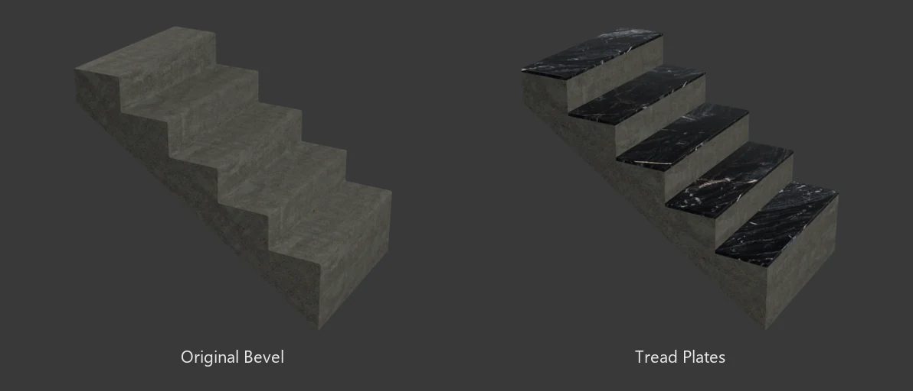
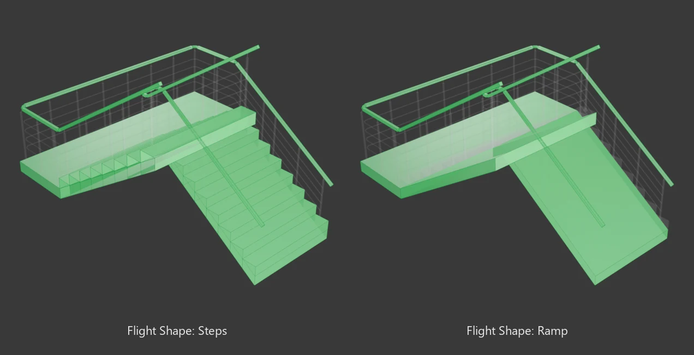

Stairs¶
Creating stairs¶
Press Build at Cursor. New stairs appear at the 3D cursor. Select the stair mesh or any generated railing part to edit the stairs. Built-in presets: Straight Concrete Stairs, L-Turn with Timber Balusters, U-Turn with Tubular Railing and Metal Balusters with Tread Plates.
The stair body is the root object and one connected, closed mesh. Railing parts are child meshes, grouped by role (handrail, infill rails, posts, supports, couplings, corner connectors, wall brackets); user-added children are kept. Merge joins the stair body and tread plates into one mesh and all railing parts into another, with one slot per shared material.

Parameters¶
Steps and Slab.
Width along X; Riser, the rise per step; Tread, the run per step along −Y. Height Input and Length Input can instead keep the total flight height or length and derive the step sizes.
Riser Offset shifts each riser’s upper edge: positive values project the nose forward over a recessed, sloping riser; negative values pull it back. The riser foot, step spacing and underside stay fixed; it must be greater than −Tread.
Slab Height is the thickness of the sloping slab below the triangular steps, at least 1 mm, 0.2 m by default.
Flights and Landings.
Flights ascend one after another, each with Steps per Flight; every extra flight adds an intermediate landing.
Turn Angle is 180° for parallel return flights or 90° for quarter turns, and Turn Direction is left or right while ascending.
Landing Depth is the landing’s depth. For 90° turns it is at least Width + Flight Gap, and the panel shows when that minimum applies.
Flight Gap is the clear space between neighbouring flights, at least 1 mm; on 90° turns the inner corner keeps it in both directions.
Side Overhang extends the exposed side edges of landings: both sides on 180° turns, the side opposite the outgoing flight on 90° turns.
End Overhang extends the landing’s far edge.
Top Landing adds a landing at the top, and Solid Base fills a single flight down to the floor.
Reinforcement. Side Ribs adds ribs below both side edges, with Rib Width inward from the side and Rib Z Offset downward. Cut Top continues the rib edge loops through the top polygons; without it only the rib corner stays inset.
Tread Finish and Bevels.

Original Bevel keeps the structural mesh with Upper Bevel, which rounds the tread noses, and Lower Bevel, which rounds the tread/riser junctions except at the first step of each flight. Each has its own Width, Segments and Profile. Widths are clamped so bevels never overlap; one segment is a chamfer and profile 0.5 a circular section.
Additional Tiles / Plates makes a Tread Plates child with separate solid plates for treads and landings. Plate Thickness is recessed into the structure, so finished levels, total rise, riser spacing, the underside and railing bases stay the same; it must be smaller than the riser and slab height.
Plate Material is stored with the stairs.
Front Edge Bevel, Side Edge Bevels and Front Corner Bevels round the plates’ exposed edges, independent of the structural bevels. Rear edges against risers and landings stay square.
Shading. Smooth Shading (on by default) shades the faces smoothly. Mark Sharp marks the shading boundaries:
Sides: the outer side contours.
Underside / Reinforcement: the rib or slab corners along the stairs.
Upper End: the outline of the top end face.
Front / Cut Faces: the front slab, rib and cut contours. The first riser/slab joint is sharp when Riser Offset is not zero.
Unbeveled Corners: tread/riser corners without a bevel.
Landing Borders: the outer borders of landing slabs.
Start Cut. Cut Type is None, Floor Cut, which clips the whole mesh at Z = 0, or Box Cut, which removes slab and rib geometry below Z = 0 up to Cut Width from the origin, at most one tread. Cut Edge Flow (Box Cut only) keeps the top surface continuous with Corner or continues the cut through it with Through.
Railing System. Enable Railing, a railing Type (Type 1 · Tubular, Type 2 · Rectangular, Type 3 · Vertical Balusters, Type 4 · Metal Balusters) and an Inner and Outer mounting of None, Flight Mounted or Wall Mounted, each with or without landings. Every type, its dimensions, posts, ends and materials are described in Stair railings in detail.
Vertical Offset moves the stairs, railings and collisions along local Z while the origin stays on the placement grid; the export includes it.
Axes and origin¶
The origin is at the start of the first flight, centred on the width, at floor level. Width runs along X and the stairs climb toward −Y with +Z up, in metres. In Godot, X is the width, +Y is up and the stairs climb toward +Z.
All modules form one connected, closed shell with no internal caps between steps, slab, ribs, flights and landings; only exposed end faces exist. Every regular unbeveled step has one triangular side face above a continuous sloping slab, and cuts and bevels subdivide only the affected parts.
UV and texturing¶
Every rebuild unwraps the stair body, tread plates and railings, one atlas per material or one with One Material. The stair generator marks no seams of its own: the islands come from projection, and curved railing parts are unwrapped along them. Preview walls get no atlas.
Collisions¶

Switch |
Shapes |
|---|---|
Flight Shape |
Steps follows the step profile (a concave mesh, or one box per step with Solid Base); Ramp uses a continuous slope from the start to the top of each flight |
Include Side Ribs |
Adds the ribs to the flight shape |
Railings |
Boxes along the handrails and concave pieces at rounded bends and returns |
Posts |
A box for each stair-mounted post |
Infill |
Open (none), Solid Panels along the railing, boxes or convex pieces on slopes, or Vertical Balusters, a box per bar on Type 3 and 4 railings |
Landings get one box each. Collision objects are named after their role, such as FlightCollision001, LandingCollision001 or HandrailCollision001.
Export for Godot¶
The GLB holds the stair body and railing meshes as they are in the scene, with their current separation, materials and UVs; preview walls are left out. Stairs have no moving bodies, so every shape belongs to the root, under StaticCollision or on the root when Root Type is a body.
Export for Substance Painter¶
The stair body and railings are one bake group, so railings occlude the steps as they will in the game. Preview walls of wall-mounted railings are in the high file only, for ambient occlusion. With One Material the low file has one texture set, Stairs_Paint.
Use in a game scene¶
Place the stairs by their origin at the foot of the first flight, climbing along their −Y in Blender (+Z in Godot). Use Vertical Offset to keep the origin on a placement grid.
Check the imported shapes against the steps and railings, especially at landings and bends.
For a smoother walk, rebuild with Flight Shape → Ramp; the visual steps stay the same.